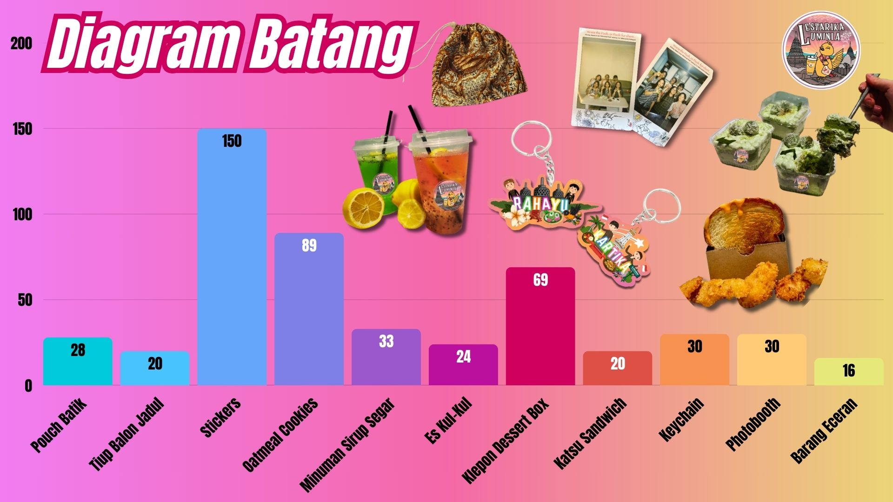

Aritmatik Sosial
U = HJ - HB
&U = U / HB x 100%
Statistik Jualan
Tabel adalah susunan data dalam baris dan kolom. Berikut adalah tabel statistik nama produk beserta jumlah yang terjual masing-masingnya. Dari data yang kami kumpulkan, dapat disimpulkan bahwa produk yang paling laku terjual adalah Stickers Pack dengan jumlah 150 yang terjual. Karena kami menjualkan stickers tersebut dengan cara bebas pembeli mau membeli seberapa banyak. Dengan harga 1 sticker adalah Rp 1.000,00, jadi banyak sekali pembeli yang langsung membeli dengan jumlah yang besar, seperti 10. Namun, ada juga beberapa pembeli yang hanya membeli dalam jumlah kecil. Dari sebelum mulainya penjualan, kami juga telah merencanakan bahwa stickers ini pasti yang paling laku, karena kami memberi kebebasan kepada pembeli ingin membeli dalam jumlah seberapa banyak.
Produk kedua yang terjual paling banyak adalah Oatmeal Cookies dengan jumlah yang terjual 89 packs. Cookies ini tidak hanya laris saat pelaksanaan bazar, tapi saat PO Batch 2 juga secara online, yaitu terjual 69 packs. Cookies ini juga banyak sekali yang membeli karena kami menjualnya dengan bahan-bahan dan kualitas yang asli dan bagus. Cookies ini tidak seperti cookies biasanya, cookies ini terbuat dari oat asli dan allergy-free (tanpa telur), sehingga pembeli yang memiliki alergi tetap bisa membeli dan menikmati cookies ini. Maka dari itu, kami menaruh harga sesuai dengan kualitasnya, dengan 1 pack harga Rp 15.000, sudah dapat 5 biji didalamnya. Setelah kami mempromosikan dan menjelaskan tentang cookies ini kepada para pembeli, banyak yang ingin membeli lagi, sehingga kami membuka PO Batch 2 nya.
Produk ketiga yang terjual banyak adalah Klepon Dessert Box. Sebuah kue dessert yang sering viral di jaman sekarang, tapi biasanya rasa coklat, strawberry, dll. Namun, kami ingin mencampurkan dengan rasa tradisional Indonesia juga, sehingga kami memilih untuk menjualkan Klepon Dessert Box. Dengan tujuan melestarikan kue tradisional Indonesia dengan yang sedang viral sekarang. Dari awal, kami juga telah percaya bahwa pasti banyak pembeli yang ingin membeli kue ini karena harganya Rp 30.000,00 itu sesuai dengan kualitasnya. Produk ini adalah yang paling mahal, namun menjadi peringkat ketiga yang paling laris terjual. Maka dari itu, terjual sebanyak 46 saat PO batch 2 online dan 23 box saat bazar.
Ketiga produk ini dapat terjual dengan laris karena kami telah mempersiapkan stock, harga, dan kualitasnya dengan baik dan sesuai. Kami menjualkan produk yang berkualitas baik, sehingga pembeli ingin membeli. Kedua, kami menjualkan produk dengan harga yang sesuai dengan kualitasnya. Sehingga seperti Klepon Dessert Box, yang menjadi produk termahal di katalog kami, namun menjadi produk ketiga yang terjual paling banyak. Terakhir, karena kami mempersiapkan stock sesuai dengan perkiraan seberapa banyak pembeli yang tertarik dan ingin membeli produk tersebut.
Dari tabel statistika tersebut, terdapat diagram batang yang menunjukkan visualisasi data nama produk & jumlah produk yang terjual dengan menggunakan batang berbentuk persegi panjang. Dari diagram batang tersebut, terlihat bahwa produk yang paling banyak terjual adalah stickers, yaitu sebanyak 150 biji. Kedua, produk yang terjual paling banyak adalah Oatmeal Cookies, dengan jumlah 89 yang terjual. Ketiga, produk yang terjual terbanyak adalah Klepon Dessert Box sebanyak 69 box.
Kemudian, terdapat diagram garis, yang berisi tentang data nama produk & jumlah produk yang terjual, namun dengan grafis dari data yang menggunakan garis. Dari diagram garis tersebut, terlihat bahwa produk yang paling banyak terjual adalah stickers, yaitu sebanyak 150 biji. Kedua, produk yang terjual paling banyak adalah Oatmeal Cookies, dengan jumlah 89 yang terjual. Ketiga, produk yang terjual terbanyak adalah Klepon Dessert Box sebanyak 69 box.
Berikut adalah diagram lingkaran nama produk dan jumlah produk yang terjual. Diagram lingkaran ini berfungsi untuk menunjukkan jumlah produk yang terjual dalam bentuk persentase ataupun besar data. Untuk mendapatkan besar sudutnya adalah persentase produk dibagi 100% x 360 derajat. Dari diagram ini, dapat terlihat jumlah barang yang terjual banyak dan barang yang terjual sedikit berdasarkan besarnya sudut pada lingkaran.